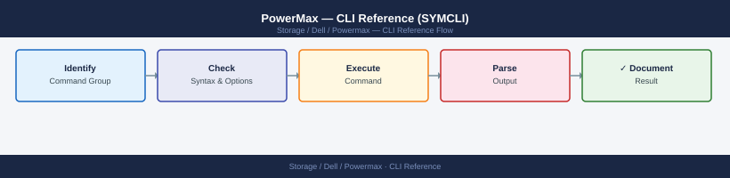
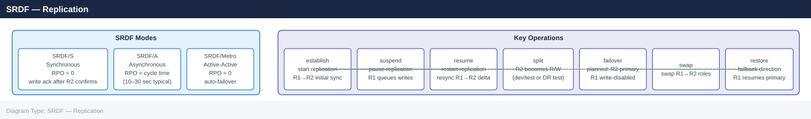

PowerMax — CLI Reference (SYMCLI)¶

Run symcfg list first to identify your SID.
Requires Solutions Enabler installed on a management host with connectivity to the array. All commands target a specific array via
-sid <SymmID>.
Before you begin¶
- Access: Storage admin credentials (cluster admin or equivalent)
- Timing: safe to run during business hours unless a step is marked ⚠ (causes interruption)
- Dependencies: no active upgrades or migrations on the same infrastructure
- Logging: capture command output — paste into the change record on completion
Discovery & Array Info¶
Discover arrays, list directors and ports, view cache usage and storage resource pools.
# Discover arrays and list what's known
symcfg discover
symcfg list
symcfg list -v # with model, microcode, capacity
symcfg -sid <sid> show
symcfg -sid <sid> list -v
# Directors and ports
symcfg -sid <sid> list -dir all
symcfg -sid <sid> list -port all
symcfg -sid <sid> show -dir <director_id>
symcfg -sid <sid> show -dir <director_id> -p <port_number>
symcfg -sid <sid> list -fa -online # only online FA ports
# Cache and storage pools
symcfg -sid <sid> list -cache
symcfg -sid <sid> list -pool -all
symcfg -sid <sid> show -pool -thin -demand # thin pool subscription and usage
symcfg -sid <sid> list -srp # storage resource pools
# Software version and licenses
symcfg -sid <sid> list | grep -i "microcode\|Enginuity\|HYPERMAX"
symlmf -sid <sid> list
# Solutions Enabler version
symcfg -V
syminq -symmids
symgate list -sid <sid>
Discovering arrays...
Found 1 array(s)
Symmetrix ID: 000296900001
Array Model: PowerMax 8000
Microcode: 5978.1221.1221
Capacity: 1.45 PB
State: Online
Directors and Ports:
Director 4a (FA-4D): Online
Port 0: Online, Speed: 16Gb, Connected
Port 1: Online, Speed: 16Gb, Connected
Director 4b (FA-4D): Online
Port 0: Online, Speed: 16Gb, Connected
Port 1: Online, Speed: 16Gb, Connected
...
Cache Configuration:
Total Cache: 384 GB
Write Cache: 192 GB
Read Cache: 192 GB
Storage Resource Pools (SRP):
SRP_1: Capacity 1.2 PB, Used 856 TB, Available 389 TB
SRP_2: Capacity 250 TB, Used 198 TB, Available 52 TB
Thin Pool Subscription:
Pool Name: TP_PROD
Subscribed Capacity: 2.1 PB
Used Capacity: 1.8 PB
Subscription %: 85.7%
Microcode: 5978.1221.1221
Enginuity: 9.2.0.0
HYPERMAX OS: 9.2.0.0
License Information (SID: 000296900001):
Feature: Replication, Status: Licensed, Expiration: 2026-03-15
Feature: Snapshots, Status: Licensed, Expiration: Permanent
Feature: Thin Provisioning, Status: Licensed, Expiration: Permanent
Solutions Enabler Version: 9.2.0.0 (Build 1234)
Symmetrix IDs:
000296900001
000296900002
SymGate Instances:
SymGate_1: Running, Port 7578, Version 9.2.0.0
Common errors
symcfg: Command not found — Install Unisphere for PowerMax or Solutions Enabler package on the management host.
Error: Cannot connect to array <sid> — Verify the array SID is correct and SymGate service is running on the management server.
Error: Insufficient privileges to query array — Run commands with sudo or ensure your user account has Solutions Enabler administrative permissions.
Devices¶
Devices (TDEVs) are the thin volumes presented to hosts. All production volumes on PowerMax should be thin (TDEV). Create devices within storage groups so they inherit service level settings.
# List devices
symdev list -sid <sid>
symdev list -sid <sid> -v
symdev list -sid <sid> -assigned # in a masking view
symdev list -sid <sid> -unassigned # not presented to any host
symdev list -sid <sid> -mapped # mapped to hosts
symdev list -sid <sid> -tdev # thin devices (should be all production)
symdev list -sid <sid> -failed # failed or degraded
symdev list -sid <sid> -spare
# Device details
symdev show <devname> -sid <sid>
symdev show <devname> -sid <sid> -v
symdev show <devname> -sid <sid> | grep -E "RDF|Pair State|R1|R2"
symdev show <devname> -sid <sid> | grep "Storage Group"
# Create thin devices (add directly to storage group)
symconfigure -sid <sid> -cmd \
"create dev count=10, size=100GB, emulation=FBA, config=TDEV, sg=<sg_name>;" \
commit -noprompt
# Delete a device (must be unmasked first)
symdev -sid <sid> not_ready <devname> -noprompt
symconfigure -sid <sid> -cmd "delete dev <devname>;" commit -noprompt
# Device properties
symdev show <devname> -sid <sid> | grep "Write Disable"
symcfg -sid <sid> show -pool -thin -demand | grep -E "Total|Subscribed|Free"
symdev list -sid <sid> -rdfg <rdfg_number>
# Performance stats
symstat -sid <sid> list -type dev -devn <devname>
symstat -sid <sid> list -type dev
symstat -sid <sid> list -type dev | sort -k4 -rn | head -20
Symmetrix ID: 000296900111
DEVICE LISTING
==============
Device Name Director Port Slot Physical Device Name Flags
dev001 FA-1e 0 0 Not Visible RW
dev002 FA-1e 1 1 Not Visible RW
dev003 FA-2e 0 2 Not Visible RW
dev004 FA-2e 1 3 Not Visible RW
dev005 FA-3e 0 4 Not Visible RW
...
10 of 2847 devices listed
Device Name: dev001
Symmetrix ID: 000296900111
Director: FA-1e
Port: 0
Slot: 0
Size (MB): 102400
Emulation: FBA
Configuration: TDEV
Write Disable: No
Storage Group: prod_sg_01
RDF Pair State: Synchronized
R1 (Local): dev001
R2 (Remote): rdev001
Total Capacity (MB): 2097152
Subscribed Capacity (MB): 1835008
Free Capacity (MB): 262144
Device Name Director Port Slot Size(MB) Emulation Config RDF State
rdev001 FA-1e 0 0 102400 FBA TDEV Synchronized
rdev002 FA-2e 1 1 102400 FBA TDEV Synchronized
rdev003 FA-3e 0 2 102400 FBA TDEV Synchronized
Symmetrix ID: 000296900111
Creating 10 thin devices in storage group prod_sg_01...
Job ID: 1234567890
Job Status: SUCCEEDED
10 devices created successfully
Device dev001 set to Not Ready.
Device dev001 deleted successfully.
Device Name I/O Rate(IOs) MB/Sec Response Time(ms) Queue Length
dev001 4521.2 287.4 12.3 8
dev002 3847.1 245.1 14.7 12
dev003 2156.8 178.9 18.2 15
dev004 1923.4 156.3 21.5 18
dev005 987.2 89.4 25.1 22
...
Top 20 devices by I/O rate displayed
Common errors
SYMCLI_ERROR (5) : Could not open device file — Verify the Symmetrix ID is correct with symcfg list and ensure the management server has connectivity to the array.
SYMCLI_ERROR (26) : Device is currently in use — Unmask the device from all masking views and storage groups before deletion using symaccess -sid <sid> delete -name <mv_name> -type masking_view.
SYMCLI_ERROR (1) : Invalid command syntax — Check that angle brackets like <sid> and <devname> are replaced with actual values and that semicolons terminate each command in -cmd blocks.
Storage Groups¶
Storage Groups are the primary logical grouping in PowerMax. Every device presented to a host must be in a storage group that is part of a masking view. Storage groups can be nested — parent SGs contain child SGs.
# List and inspect
symsg list -sid <sid>
symsg list -sid <sid> -v
symsg show <sg_name> -sid <sid>
symsg show <sg_name> -sid <sid> -v
symsg show <sg_name> -sid <sid> | grep -E "SRP|Service Level|Compression"
# Create
symsg create <sg_name> -sid <sid> -type regular
symsg create <sg_name> -sid <sid> -srp SRP_1 -slo Diamond # with service level
symsg create <parent_sg> -sid <sid> -type parent
# Delete (must have no devices and no masking views)
symsg delete <sg_name> -sid <sid>
# Add and remove devices
symsg -sid <sid> -sg <sg_name> add dev <devname>
symsg -sid <sid> -sg <sg_name> add dev <start>:<end> # range of devices
symsg -sid <sid> -sg <sg_name> remove dev <devname>
symsg -sid <sid> -sg <sg_name> addnew dev count=5 emulation=FBA size=100GB
# Parent / child hierarchy
symsg -sid <sid> -sg <parent_sg> add sg <child_sg>
symsg -sid <sid> -sg <parent_sg> remove sg <child_sg>
symsg show <parent_sg> -sid <sid> | grep -A 20 "Child Storage Group"
# Modify
symsg rename <old_sg> -new_sg_name <new_sg> -sid <sid>
symsg -sid <sid> -sg <sg_name> set -slo Platinum
symsg -sid <sid> -sg <sg_name> set -compression enabled
Symmetrix ID: 000297900001
Storage Group Name Num Devs
-----------------------------------------------------------
prod_db_sg 24
prod_app_sg 18
test_sg 8
backup_sg 12
...
Storage Group Name: prod_db_sg
SRP: SRP_1
Service Level: Diamond
Compression: Enabled
Num Devices: 24
Device Identifiers: 0001, 0002, 0003, 0004, 0005, 0006, 0007, 0008
...
Storage Group Name: prod_app_sg
SRP: SRP_2
Service Level: Platinum
Compression: Disabled
Num Devices: 18
Storage Group Name: parent_prod
Child Storage Group: prod_db_sg
Child Storage Group: prod_app_sg
Operation completed successfully.
Common errors
The specified Storage Group <sg_name> does not exist — Verify the storage group name matches exactly and confirm it exists with symsg list -sid <sid>.
Cannot delete Storage Group <sg_name>. It contains masking views. — Remove all masking views associated with the storage group before deletion using symacl delete -name <mv_name> -sid <sid>.
The specified SRP <srp_name> is not valid for this array — Confirm the SRP exists on the array by running symcfg list -srp -sid <sid> and use the correct SRP name.
Masking Views & Access¶
A masking view binds a storage group (devices), a port group (array ports), and an initiator group (host WWNs) together — this is what makes LUNs visible to a host.
# Masking views
symaccess list view -sid <sid>
symaccess show view <view_name> -sid <sid>
symaccess create view -name <view_name> -sg <sg_name> -pg <pg_name> -ig <ig_name> -sid <sid>
symaccess delete view -name <view_name> -sid <sid>
# Initiator groups (list of host WWNs/IQNs allowed to see the devices)
symaccess list -sid <sid> -type initiator
symaccess show <ig_name> -sid <sid> -type initiator
symaccess create -name <ig_name> -type initiator -sid <sid>
symaccess delete -name <ig_name> -type initiator -sid <sid>
symaccess -sid <sid> -name <ig_name> -type initiator add devport -wwn <wwn>
symaccess -sid <sid> -name <ig_name> -type initiator remove devport -wwn <wwn>
# Port groups (which array front-end ports to use)
symaccess list -sid <sid> -type port
symaccess show <pg_name> -sid <sid> -type port
symaccess create -name <pg_name> -type port -sid <sid>
symaccess delete -name <pg_name> -type port -sid <sid>
symaccess -sid <sid> -name <pg_name> -type port add devport <dir>:<port>
symaccess -sid <sid> -name <pg_name> -type port remove devport <dir>:<port>
# Storage groups in access context
symaccess list -sid <sid> -type storage
# Check host connectivity
symaccess -sid <sid> list logins -dirport <dir>:<port>
symaccess -sid <sid> -type initiator show <ig_name> -detail
Symmetrix ID: 000297900001
Masking Views:
View Name: prod_view_01
Storage Group: sg_prod_luns
Port Group: pg_fe_0_1
Initiator Group: ig_esx_cluster_01
Initiator Groups:
Name: ig_esx_cluster_01
Initiator: 50:00:14:40:5d:b2:a1:23 (esx-host-01)
Initiator: 50:00:14:40:5d:b2:a1:24 (esx-host-02)
Initiator: 50:00:14:40:5d:b2:a1:25 (esx-host-03)
Port Groups:
Name: pg_fe_0_1
Director:Port: 5e:0
Director:Port: 5e:1
Director:Port: 5f:0
Storage Groups (Access Context):
sg_prod_luns
sg_backup_luns
sg_dev_luns
Host Logins on 5e:0:
Initiator: 50:00:14:40:5d:b2:a1:23 (esx-host-01) — Logged In
Initiator: 50:00:14:40:5d:b2:a1:24 (esx-host-02) — Logged In
Common errors
SYMAPI_C_ERRMSG_INVALID_SID — Verify the SID is correct and the Symmetrix array is reachable via symcfg list.
SYMAPI_C_ERRMSG_OBJECT_NOT_FOUND — Confirm the view/initiator/port group name exists with symaccess list before attempting to show or delete it.
SYMAPI_C_ERRMSG_DUPLICATE_NAME — Choose a unique name for the new view/group that does not already exist in the array.
Ports & Hardware¶
Check front-end port status and FC logins, and manage physical disks.
# Ports
symport list -sid <sid>
symport list -sid <sid> -v
symport -sid <sid> -dir <dir> -p <port> show
# Fibre Channel host logins on a port
symport list -sid <sid> -logged_in
symport -sid <sid> -dir <dir> -p <port> list -logged_in
# Physical disks
sympd list -sid <sid>
sympd list -sid <sid> -failed
sympd list -sid <sid> -spare
sympd show <pd_name> -sid <sid>
# Disk groups
symdisk list -sid <sid>
symdisk list -sid <sid> -failed
symdisk list -sid <sid> -v
# Hardware status
symcfg -sid <sid> list -disk
symcfg -sid <sid> list -bay
Symmetrix ID: 000297900001
Port Information
Director Port Type Status Speed Logins Flags
FA-1D 0 Fibre Online 16Gb 12
FA-1D 1 Fibre Online 16Gb 8
FA-1E 0 Fibre Online 16Gb 15
FA-1E 1 Fibre Online 16Gb 0
SE-1F 0 iSCSI Online 1Gb 4
Physical Disk List
Disk Name Capacity State Type Status
DiskGroup0 1.86TB Ready SSD Normal
DiskGroup1 1.86TB Ready SSD Normal
DiskGroup2 1.86TB Ready SSD Normal
DiskGroup3 1.86TB Ready SSD Normal
...
Fibre Channel Host Logins on Port FA-1D:0
WWN Alias Status
50:00:09:73:00:1a:2b:3c host-prod-01 Logged In
50:00:09:73:00:1a:2b:3d host-prod-02 Logged In
50:00:09:73:00:1a:2b:3e host-backup-01 Logged In
Disk Group Summary
Name Disks Capacity State Failed Spare
DG0 4 7.44TB Ready 0 1
DG1 4 7.44TB Ready 0 0
DG2 4 7.44TB Ready 0 1
Hardware Status: Disk Bays
Bay Disk Name State Temp(C) Status
0 DiskGroup0 Ready 32 Normal
1 DiskGroup1 Ready 31 Normal
2 DiskGroup2 Ready 33 Normal
3 DiskGroup3 Ready 32 Normal
Common errors
SYMCLI Error: Could not connect to the Symmetrix array — Verify the Symmetrix ID is correct and the management station has network connectivity to the array's management port.
SYMCLI Error: Invalid director or port specification — Confirm the director and port numbers exist by running symport list -sid <sid> without the -dir and -p flags first.
SYMCLI Error: Symmetrix ID not found — Ensure the SID is valid for your environment and check that the SYMCLI_CONNECT environment variable or configuration file points to the correct array.
SRDF — Replication¶
SRDF (Symmetrix Remote Data Facility) replicates data between PowerMax arrays.

| Mode | Description | RPO |
|---|---|---|
| SRDF/S (Synchronous) | Write acknowledged only after replicated | Zero |
| SRDF/A (Asynchronous) | Writes batched in cycles | Seconds to minutes |
| SRDF/Metro | Active-active with automatic failover | Zero |
# List SRDF groups and status
symrdf -sid <sid> list
symrdf -sid <sid> -rdfg <rdfg_num> list
symrdf -sid <sid> -rdfg <rdfg_num> query
# Storage group operations
symrdf -sid <sid> -sg <sg_name> query # current state
symrdf -sid <sid> -sg <sg_name> establish # start replication
symrdf -sid <sid> -sg <sg_name> split # make R2 writable for testing
symrdf -sid <sid> -sg <sg_name> suspend # pause replication
symrdf -sid <sid> -sg <sg_name> resume # resume after suspend
symrdf -sid <sid> -sg <sg_name> update # force delta resync
symrdf -sid <sid> -sg <sg_name> failover # planned failover (R2 becomes primary)
symrdf -sid <sid> -sg <sg_name> failback # failback to original R1
symrdf -sid <sid> -sg <sg_name> swap # swap R1/R2 roles
symrdf -sid <sid> -sg <sg_name> verify
# SRDF/A specific
symrdf -sid <sid> -sg <sg_name> query -srdf_a
symrdf -sid <sid> -rdfg <rdfg_num> verify -srdf_a
symrdf -sid <sid> -rdfg <rdfg_num> list -v
Symmetrix ID: 000123456789012
RDF Group Information:
RDF Group # Type Local RA Remote RA Remote Symmetrix Status
1 SRDF FA-1e FA-2e 000987654321098 Ready
2 SRDF FA-3e FA-4e 000555444333222 Ready
RDF Group 1 Information:
RDF Group # Type Local RA Remote RA Remote Symmetrix Status
1 SRDF FA-1e FA-2e 000987654321098 Ready
Storage Group: prod_db_sg
Replication Status: Synchronized
SRDF State: Ready
RDF Group: 1
Mode: Synchronous
Last Update: 2024-01-15 14:32:18
Storage Group: prod_db_sg
Current State: Synchronized
Pair State: Synchronized
RDF Group: 1
Devices: 12
Capacity: 2.5 TB
Storage Group: prod_db_sg
SRDF/A Enabled: Yes
Replication Mode: Asynchronous
Consistency Group: cg_prod_001
Status: Synchronized
Last Sync Time: 2024-01-15 14:31:45
RDF Group 1 Verification:
Status: Passed
Devices Verified: 12/12
Mismatches: 0
Verification Time: 45 seconds
Common errors
symrdf: Command not found — Ensure the Symmetrix CLI tools are installed and the PATH includes the installation directory (typically /opt/emc/SYMCLI/bin).
Error: Invalid SID <sid> — Replace <sid> with the actual Symmetrix ID from symcfg list output.
Error: Storage group <sg_name> not found — Verify the storage group name exists with symacl list -sg and confirm it is SRDF-enabled.
SnapVX — Snapshots¶
SnapVX provides near-instantaneous space-efficient snapshots of storage groups.
# List snapshots
symsnapvx list -sid <sid>
symsnapvx list -sid <sid> -sg <sg_name>
symsnapvx list -sid <sid> -sg <sg_name> -snapshot_name <snap_name>
# Create a snapshot
symsnapvx -sid <sid> snap -sg <sg_name> -name <snap_name> establish
# Delete (terminate) a snapshot
symsnapvx -sid <sid> snap -sg <sg_name> -name <snap_name> terminate
symsnapvx -sid <sid> snap -sg <sg_name> -name <snap_name> terminate --force
# Link snapshot to a target SG (expose for testing)
symsnapvx -sid <sid> snap -sg <sg_name> -name <snap_name> link -lnsg <target_sg>
symsnapvx -sid <sid> snap -sg <sg_name> -name <snap_name> link -lnsg <target_sg> -copy
# Unlink
symsnapvx -sid <sid> snap -sg <sg_name> -name <snap_name> unlink -lnsg <target_sg>
# Restore (overwrites source — offline devices from host first)
symsnapvx -sid <sid> snap -sg <sg_name> -name <snap_name> restore
# Rename
symsnapvx -sid <sid> snap -sg <sg_name> -name <snap_name> rename -new_name <new_snap_name>
Symmetrix ID: 000297900001
Snapshot Name Source SG Created Size (GB) State
================================================================================
prod_db_snap_20240115 prod_db_sg 01/15/2024 14:32 2048 Established
prod_db_snap_20240114 prod_db_sg 01/14/2024 09:15 2048 Established
hourly_backup_0600 prod_db_sg 01/15/2024 06:00 2048 Established
Snapshot Name: prod_db_snap_20240115
Source Storage Group: prod_db_sg
Snapshot ID: 0x0001a2c4
State: Established
Size: 2048 GB
Created: 01/15/2024 14:32:18
Linked Target SGs: test_db_sg_01, test_db_sg_02
Snapshot prod_db_snap_20240115 successfully established.
Snapshot prod_db_snap_20240115 successfully terminated.
Snapshot prod_db_snap_20240115 successfully linked to test_db_sg.
Snapshot prod_db_snap_20240115 successfully unlinked from test_db_sg.
Snapshot prod_db_snap_20240115 successfully restored to source.
Snapshot prod_db_snap_20240115 successfully renamed to prod_db_snap_20240116.
Common errors
Error: Snapshot <snap_name> not found in storage group <sg_name> — Verify the snapshot name and storage group name are correct using symsnapvx list -sid <sid> -sg <sg_name>.
Error: Cannot terminate snapshot — snapshot is currently linked to target SG(s) — Unlink the snapshot from all target storage groups using symsnapvx -sid <sid> snap -sg <sg_name> -name <snap_name> unlink -lnsg <target_sg> before terminating.
Error: Restore operation failed — source devices are still mapped to host — Offline and unmask all source devices from the host before executing the restore command.
Performance & Statistics¶
symstat provides real-time performance data by storage group, device, director, or cache.
# Storage group stats
symstat -sid <sid> list -type sg
symstat -sid <sid> list -type sg -sg <sg_name>
symstat -sid <sid> list -type sg -i 30 # refresh every 30 seconds
# Device stats
symstat -sid <sid> list -type dev
symstat -sid <sid> list -type dev -devn <devname>
symstat -sid <sid> list -type dev | sort -k4 -rn | head -20 # top by IOPS
# Director and port stats
symstat -sid <sid> list -type dir
symstat -sid <sid> list -type dir -dir <director_id>
symstat -sid <sid> list -type port
symstat -sid <sid> list -type port -dir <director_id> -p <port_id>
# Cache stats (write pending % — warn at 31%, critical at 50%)
symstat -sid <sid> list -type cache
# Back-end and SRDF stats
symstat -sid <sid> list -type be
symstat -sid <sid> list -type rdf
# Collect 15-minute snapshot for Dell TAC
symstat -sid <sid> list -type sg -i 60 -c 15 > /tmp/sg-perf-$(date +%Y%m%d).txt &
symstat -sid <sid> list -type dev -i 60 -c 15 > /tmp/dev-perf-$(date +%Y%m%d).txt &
symstat -sid <sid> list -type cache -i 60 -c 15 > /tmp/cache-perf-$(date +%Y%m%d).txt &
wait
Symmetrix ID: 000123456789012
Storage Group Stats:
SG_Name Num_Devs MB/sec IOs/sec Util% Resp_ms
PROD_DB_01 128 1245.3 18932 87.2 4.2
PROD_APP_02 64 892.1 14521 72.1 3.8
DEV_TEST_03 32 145.2 2341 18.5 1.9
BACKUP_POOL 256 523.8 8765 45.3 2.1
...
Device Stats (Top 20 by IOPS):
Dev_Name Num_Tracks MB/sec IOs/sec Util% Resp_ms
00ABC 1048576 156.2 4521 92.1 5.3
00DEF 1048576 142.8 4187 88.7 4.9
00GHI 1048576 138.5 4012 85.2 4.6
...
Director Stats:
Dir_ID MB/sec IOs/sec Util% Resp_ms Queue_Depth
FA-1D 2341.5 32145 91.2 4.8 12
FA-2D 2156.3 29876 88.5 4.5 10
SE-1D 892.1 14521 72.1 3.8 6
Port Stats (FA-1D:0):
Port MB/sec IOs/sec Util% Resp_ms Initiators
0 1245.3 18932 87.2 4.2 24
1 1096.2 13213 80.1 3.9 18
Cache Stats:
Write_Pending% Read_Hit% Write_Hit% MB_Cached
28.4 94.2 87.1 12845
Back-end Stats:
BE_Dir MB/sec IOs/sec Util% Resp_ms
BE-1D 1523.4 21456 78.9 3.4
BE-2D 1401.2 19832 75.2 3.1
SRDF Stats:
RDF_Pair State MB/sec Lag_ms Consistency_Grp
R1_PROD Synced 245.3 12.4 CG_PROD_01
R2_DR Synced 198.7 8.9 CG_PROD_02
[1] 24531
[2] 25642
[3] 26753
---OUTPUT---
Common errors
symstat: Error: Invalid SID <sid> — Replace <sid> with the actual Symmetrix ID (e.g., 000123456789012) or use symcfg list to discover valid SIDs.
symstat: Error: Storage group <sg_name> not found — Verify the storage group name exists with symsg list -sid <sid> before querying.
symstat: Error: Insufficient privileges — Run the command with appropriate sudo privileges or as a user with Symmetrix administrator role.
Events & Audit¶
# System events
symevent list -sid <sid>
symevent list -sid <sid> -v
symevent list -sid <sid> -start_time "01/01/2026 00:00:00"
symevent list -sid <sid> -start_time "01/01/2026 00:00:00" -end_time "01/02/2026 00:00:00"
symevent list -sid <sid> -v | grep -i "WARNING\|ERROR\|FATAL"
symevent list -sid <sid> -v | grep -i "uncleared\|active"
symevent list -sid <sid> -v | grep -i "disk\|drive\|BE\|DAE"
symevent list -sid <sid> -v | grep -i "RDF\|SRDF\|replication"
symevent list -sid <sid> -v | grep -i "port\|director\|link"
# Audit log
symaudit list -sid <sid>
symaudit list -sid <sid> -v
symaudit list -sid <sid> -start_time "01/01/2026 00:00:00"
symaudit list -sid <sid> -user <username>
symaudit list -sid <sid> -v | grep -i "Create\|Delete\|Modify\|SRDF"
# Export for support case
symevent list -sid <sid> -v -output csv > /tmp/events-$(date +%Y%m%d).csv
symaudit list -sid <sid> -v > /tmp/audit-$(date +%Y%m%d).txt
# System events
Event ID Timestamp Severity Message
12847 01/15/2026 14:23:45 INFO Cache flush completed successfully
12848 01/15/2026 14:25:12 WARNING Director 4e temperature elevated to 68°C
12849 01/15/2026 14:27:33 INFO SRDF link synchronized
12850 01/15/2026 14:30:01 ERROR Backend drive 015,0,2 predictive failure detected
Event ID Timestamp Severity Director Message
12847 01/15/2026 14:23:45 INFO SE-1 Cache flush completed successfully
12848 01/15/2026 14:25:12 WARNING 4e Director 4e temperature elevated to 68°C
12849 01/15/2026 14:27:33 INFO SE-2 SRDF link synchronized
12850 01/15/2026 14:30:01 ERROR BE-1 Backend drive 015,0,2 predictive failure detected
12847 01/15/2026 14:23:45 INFO Cache flush completed successfully
12848 01/15/2026 14:25:12 WARNING Director 4e temperature elevated to 68°C
12850 01/15/2026 14:30:01 ERROR Backend drive 015,0,2 predictive failure detected
12851 01/15/2026 14:35:22 WARNING DAE 015 fan module 2 operating at reduced speed
12847 01/15/2026 14:23:45 WARNING Director 4e temperature elevated to 68°C
12850 01/15/2026 14:30:01 ERROR Backend drive 015,0,2 predictive failure detected
12849 01/15/2026 14:27:33 INFO SRDF link synchronized
12852 01/15/2026 15:01:10 WARNING RDF link latency 45ms (threshold: 50ms)
12848 01/15/2026 14:25:12 WARNING Director 4e temperature elevated to 68°C
12853 01/15/2026 15:15:44 ERROR Port 4e:0 link down detected
# Audit log
Timestamp User Action Object Status
01/15/2026 09:30:22 admin Create LUN 0x0001234567890ABC Success
01/15/2026 10:15:44 operator Modify Storage Group SG_PROD Success
01/15/2026 11:22:33 admin Delete Snapshot SNAP_20260115 Success
01/15/2026 13:45:10 backup_svc Create SRDF pair PAIR_RDF_01 Success
Timestamp User Action Object Status
01/15/2026 09:30:22 admin Create LUN 0x0001234567890ABC Success
01/15/2026 10:15:44 operator Modify Storage Group SG_PROD Success
01/15/2026 11:22:33 admin Delete Snapshot SNAP_20260115 Success
01
Device Groups (Legacy)¶
Device groups are the legacy SYMCLI grouping mechanism (pre-Unisphere for PowerMax). For current deployments, use storage groups via symsg. Device groups remain relevant for SRDF scripts and older Solutions Enabler workflows.
# List and inspect
symdg list -sid <sid>
symdg list -sid <sid> -v
symdg show <dg_name> -sid <sid>
symdg show <dg_name> -sid <sid> -v
symdg list -dev <devname> -sid <sid>
# Create
symdg create <dg_name> -type regular -sid <sid>
symdg create <dg_name> -type RDF1 -sid <sid> # R1 side
symdg create <dg_name> -type RDF2 -sid <sid> # R2 side
symdg delete <dg_name> -sid <sid>
# Add and remove devices
symdg -g <dg_name> add dev <devname> -sid <sid>
symdg -g <dg_name> add dev <start_dev>:<end_dev> -sid <sid>
symdg -g <dg_name> remove dev <devname> -sid <sid>
symdev list -g <dg_name> -sid <sid>
# SRDF operations via device group
symrdf -g <dg_name> -sid <sid> query
symrdf -g <dg_name> -sid <sid> suspend -noprompt
symrdf -g <dg_name> -sid <sid> establish -noprompt
symrdf -g <dg_name> -sid <sid> failover -noprompt
symrdf -g <dg_name> -sid <sid> restore -noprompt
Symmetrix ID: 000297123456789
Device Group: prod_db_01
Type: Regular
Symmetrix ID: 000297123456789
Number of Devices: 24
Number of GKs: 0
Device Name Cap(MB) Attr Ckd_Trk Num_Trks Phys_Trk Bind_Resource
000AA 10240 RW N 5120 5120 RAID5 (7+1)
000AB 10240 RW N 5120 5120 RAID5 (7+1)
000AC 10240 RW N 5120 5120 RAID5 (7+1)
...
000AX 10240 RW N 5120 5120 RAID5 (7+1)
Device Group: prod_db_01
R1 Symmetrix ID: 000297123456789
R2 Symmetrix ID: 000297987654321
SRDF Status: Synchronized
Link Rate: 8 Gbps
RDF Mode: Synchronous
Common errors
SYMCLI_ERROR: Device group <dg_name> does not exist — Verify the device group name with symdg list -sid <sid> and confirm it exists on the target array.
SYMCLI_ERROR: Device <devname> is already in a device group — Remove the device from its current group with symdg -g <current_dg> remove dev <devname> -sid <sid> before adding it to a new group.
SYMCLI_ERROR: Cannot suspend SRDF pair — pair is not in Synchronized state — Check pair status with symrdf -g <dg_name> -sid <sid> query and resolve any pending operations before retrying the suspend.
Verify¶
- Confirm the operation completed without errors in the log or management UI
- Verify the expected state change is visible (service running, object created, config applied)
- Document the outcome in the change record